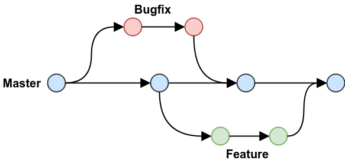

Version Control#
Version control is essential to managing the development process, allowing multiple developers to work on code simultaneously, track changes, and maintain a history of the project. It enables collaboration, safeguards against errors, and helps manage releases and bug fixes effectively.
This project follows the GitHub Flow branching strategy. This lightweight workflow is both simple and fast. Below, we will explain the key steps for contributing to this project using GitHub Flow, as well as references to other branching strategies, their pros, and cons. You’ll also find instructions for handling longer feature development, merge conflicts, and patches to maintenance branches.
Note
We assume developers are already at least a little familiar with using git and GitHub. If this is not the case for you, there are many online tutorials to help you learn git.
Branching Strategies#
Several branching strategies are used in software development, each with its pros and cons. Below are a few common ones:
Git Flow: Git Flow is a comprehensive branching strategy with separate branches for features, releases, hotfixes, and development. It’s well-suited for larger projects with multiple releases but can be overly complex for smaller teams.
Pros: Clear separation between development, releases, and hotfixes.
Cons: Complicated branching structure, especially for smaller projects.
Trunk-Based Development: This approach involves a single main branch with frequent small merges directly to it. Developers create short-lived feature branches and merge back quickly.
Pros: Simplifies version control, encourages continuous integration.
Cons: Requires careful management to avoid breaking changes on main.
GitHub Flow: A simpler model, ideal for projects using continuous delivery. Development happens in short-lived feature or bug branches that are merged back into
mainvia pull requests.Pros: Simple, easy to use, integrates well with CI/CD.
Cons: Lacks formal support for maintaining multiple concurrent releases.
For this project, we use GitHub Flow, which is explained in detail below. Interested parties can read more about any of these branching strategies here.
Thevenin Workflow#
The Thevenin project uses GitHub Flow as its version control model due to its simplicity and proven success in other scientific packages like SciPy and Cantera. The workflow emphasizes short-lived feature branches, as shown in the figure below, that each address a single bug fix or feature addition.
{kind=link}

Key Features#
- Main Branch:
mainis the default branch that contains the latest stable developer code. It reflects the current state of development and should always be functional.
- Release Branches:
Each release has its own maintenance branch, e.g.,
v1.1.x. These branches should only receive bug fixes and are not meant for new feature development.
- Feature and Bugfix Branches:
New features or bug fixes should be developed on separate branches off main. The naming conventions are:
Feature branches:
description-issue#Bugfix branches:bug-description-issue#
Note that only bug fixes should have a prefix, but all branches should reference an issue number. Use underscores between works as needed and try to keep to shorter names. The issue can always be referenced in cases where more information is needed.
The main Thevenin repo only hosts the main and release branches. Users should fork the main repo and clone the fork to get a local copy:
git clone https://github.com/<username>/thevenin.git
You will likely also want to setup a remote to the upstream repository for dealing with merge conflicts and version patches, as discussed below. To set up an upstream remote use:
git remote add upstream https://github.com/ROVI-org/thevenin.git
Bug Fixes#
Always prioritize fixing bugs in the main branch first. Older releases should only be patched on a case-by-case basis, primarily focusing on the most recent releases. It is possible that known bugs will not be patched for versions that are more than three releases old. If you are patching main, follow the directions in the New Features section. Otherwise, to patch a bug on a previous release, follow these steps:
Fetch the release branches and create a new branch off the release:
git fetch upstream git checkout -b bug-description-#123 upstream/v1.1.x
Work on your local branch to fix the bug. Commit and push back to your fork as needed:
git add . git commit -m "Resolved bug causing ... (#123)" git push origin bug-descriptio-#123
Submit a pull request (PR) targeting the specific release branch (e.g.,
v1.1.x). Only bug fixes should be submitted to release branches – no new features. Make sure you fill out the pull request template and include more detail than was provided in your commit messages. After all continuous integration (CI) checks are passing, a reviewer will be assigned and will follow up according to the review process.If you opened a PR and any CI checks are failing, simply continue working on your branch and committing. All extra commits will automatically be added to the PR.
Repeat this processes as necessary to patch additional older versions. Unfortunately, each version needs to be patched individually, which creates more work for developers, and is the reason we prioritize which versions get patched and which do not. At a minimum, patches should always be applied to all versions between the original patched release and main. For example, patches to
v1.1.xshould also be applied forv1.2.xand above, includingmain, but do not necessarily need to be submitted forv1.0.x.
New Features#
New features should be added to branches off main. Before you branch off your local branch, make sure it is up-to-date with the upstream repo. You can either use the GitHub web interface to sync your fork with the upstream repository and then run:
git checkout main
git pull
or, if you setup the upstream remote, you can do this all in the command line using:
git fetch upstream
git checkout main
git merge upstream/main
git push origin main
You should never commit directly to a main branch, even including your local or forked main branch. Instead, your main branch should always either be synced with the upstream repo, or should simply be behind by some number of commits depending on the last time it was synced. After syncing, create a new branch. Your new branch should be named according to the directions above depending on whether it is a bug fix or for a new feature. Here we demonstrate a new feature:
git checkout -b branch-name-#456
Once the new branch is created, follow the steps below to add your new feature:
Work on your local branch to add the feature. Commit and push back to your fork as needed:
git add . git commit -m "Working new feature (#456)" git push origin branch-name-#456
Submit a pull request targeting the upstream
mainbranch. Make sure you fill out the pull request template and include more detail than was provided in your commit messages. After all CI checks are passing, a reviewer will be assigned and will follow up according to the review process.If you opened a PR and any CI checks are failing, simply continue working on your branch and committing. All extra commits will automatically be added to the PR.
After the PR is accepted and merged into the upstream repository, delete your new branch locally and in your GitHub repo:
git checkout main git branch -d branch-name-#456 git push origin --delete branch-name-#456 git fetch --prune
Merge Conflicts#
If you’ve submitted a PR and are seeing merge conflicts you should take the following steps:
Make sure your
mainbranch is synced with theupstreamremote:git fetch upstream git checkout main git merge upstream/main git push main
Rebase your local bug/feature branch onto
main:git checkout branch-name-#456 git rebase main
Address merge conflicts as needed and continue the rebase:
git rebase --continueRecommit and push as normal and verify the merge conflict in the PR gets removed. At this point, if you are still having issues, please leave a comment in the PR asking a core developer to help out.
Continuous Integration#
Every pull request is automatically tested using GitHub Actions. The CI workflow runs linting, spellchecking, and tests against all major operating systems and supported Python versions. Pull requests should only be merged when all tests pass unless a core developer explicitly makes an exception (e.g., for a soon-to-be-unsupported Python version).
Running tests locally is encouraged during development:
nox -s tests
Prior to commits and pushes, we also include a pre-commit session using nox that will run through these same tests AND will check for linting and misspellings. Use this prior to pushes and/or pull requests:
nox -s pre-commit
This ensures all tests pass before pushing any changes.